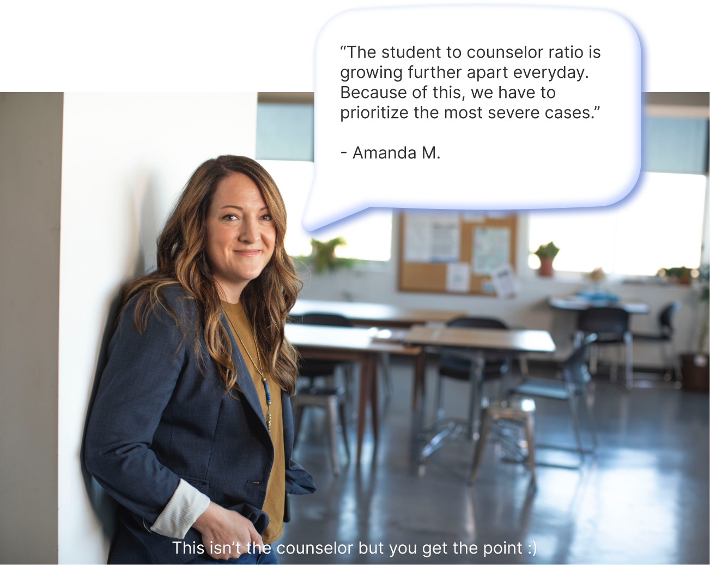
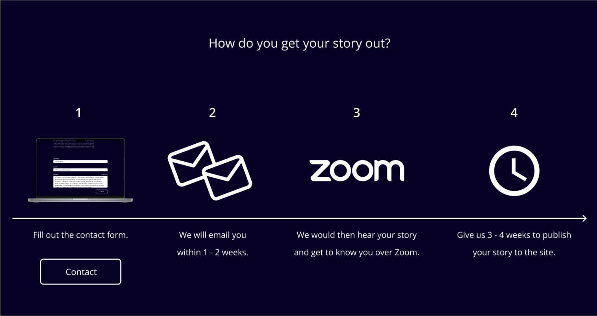
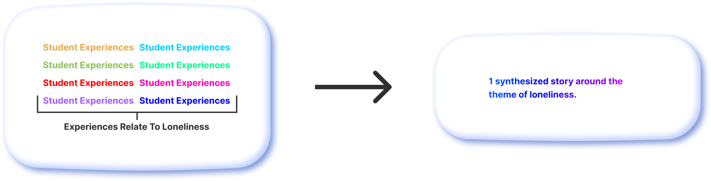

Chapters:
Tunnel_vzn is a storytelling website that focuses on the mental/social struggles of University of Washington students. Research on student experiences influences the stories. I started this project after hearing about a shortage of counselors at my university. I wanted to see if I could make an impact.
Figma, Github, Next.js
Jan 2022 - Present
In an unrelated course project, I was interviewing a counselor who works for the University of Washington (UW). I knew from research that the pandemic has been rough on students. However, I was shocked when I learned the desperation of the situation. The counselor said:
If these feelings aren’t acknowledged, it can lead ot severe consequences. Here are some problems and feelings that contributed to the poor mental health of UDub students. The results are sourced from mental wellness surveys I did for recent course projects.

Before I started researching the mental health space, I knew of many solutions. This time, I examined them from a pros versus cons perspective to find out what these solutions did that worked and what was lacking. I assessed many solutions, but I focused on two because they were the most established.
In-person or online 1:1 sessions with a health care professional

Motivational speeches, mental health PSAs, documentaries, personal stories

1. Made for UDub students? - How can my solution empathize with UDub students?
2. Standout from the crowd! - Visibility is a key factor in success.
3. Can I do it? - Do-able by a small team with a limited budget.

Storyworthy by Matthew Dick taught me the value of storytelling in our lives. It made me realize that expressing our turbulent experiences through storytelling lifts a weight off our shoulders when we are having a hard day.
If I could promote storytelling catered to UDub students, it could have similar effects as therapy. My solution would be a read-only website that would feature stories that students could read through and motivate them to think.

I told friends and mutual friends (designers and developers) about my solution and got them on board. Coincidentally, there was a hackathon occuring over the weekend and it was the perfect opportunity to jumpstart the website solution and build team synergy.

The following week, my team and I met to address the current state of the project. One concern we uncovered regarded the story submission process.
If no one submits a story, the company would have no stories. If we wanted students to go through a lengthy process, we better be offering some sweet compensation.
My team and I will become the storytellers. However, I want to make the stories relatable to the student population. I can gather student experiences that relate to a theme such as loneliness and use that research to shape the story. Because the story would be a combination of student experiences, it would make sense tell the story using made-up people.
The majority of the website is off-white and full black. Full black symbolizes the darkness that hides itself in Student’s minds. While the off-white symbolizes the light that drives out the darkness. I use this symbolism to keep the UI as minimal as possible so it would not detract from the featured stories.

The onboarding creates a nice first impression on readers which would build retention. The homepage is important because it displays all the stories. Of course, it wouldn’t be a storytelling platform without any stories, so having at least one story to show would give students a sense of what we are aiming to do. I aim to launch the MVP during Q4 2022 (sometime during October).
The website tells relatable stories that enrich UDub students. As such, researching the stories’ impact on UDub students is important. At the end of every story, there will be a feedback screen where students can give their thoughts on the story annonymously.
I'm currently working with developers to make the transition from prototype to a fully-functioning product. At the same time, I'm putting together tunnelvzn's first story by synthesizing the 19 experiences that we have gotten through student interviews.

If the progression rate is maintained, we would meet the MVP launch deadline of Q4 2022. Post-launch, I will promote it on my university’s Discord and Reddit. After which, my team and I will monitor the impact of the first story and make adjustments where necessary.

Looking back, the project has come a long way. If team members weren’t comfortable expressing their ideas (no matter how crazy they seem), this project have ended after the hackathon event concluded. I give my teammates’ ideas time to shine so everyone can discuss and come to a conclusion. The project isn’t a one-man show. It is a team effort.